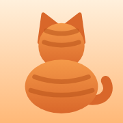
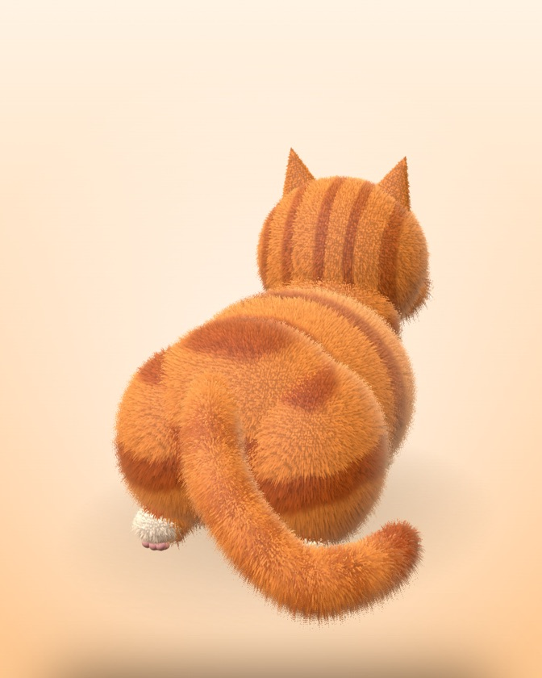

🔊
声音是真猫Real cat sounds
拍打声和喵声来自 Kun 家猫咪的手机录音；呼噜声来自 Wikimedia 的公有领域录音。没有一声是合成的。
The pats and meows are phone recordings of Kun's own cat; the purr comes from public-domain recordings on Wikimedia. Nothing is synthesized.

数字猫猫Digital Cats
橘子 · 温顺Tangerine · easygoing手机上的一只 3D 毛绒猫。拍拍它，它会抖毛、呼噜、回你一声喵。不用下载，不用登录。
A fluffy 3D cat on your phone. Pat it and it ruffles, purrs and meows back. No download, no sign-up.
去拍猫 →Go pat the cat →拍打声和喵声来自 Kun 家猫咪的手机录音；呼噜声来自 Wikimedia 的公有领域录音。没有一声是合成的。
The pats and meows are phone recordings of Kun's own cat; the purr comes from public-domain recordings on Wikimedia. Nothing is synthesized.
猫是在浏览器里实时画出来的（Three.js），每一次拍都会让毛动起来。两只可选：温顺的橘子，傲娇的煤球。
The cat is drawn live in your browser with Three.js, and every pat moves the fur. Pick easygoing Tangerine or feisty Coal.
Kun，一个靠 AI 搭档写代码的人。上班累了想撸猫，就做了一只放进手机里，也送给同样需要喘口气的你。
Kun, who builds things with a crew of AI coding partners. Needed a cat to pat after work, so made one that lives in your phone — for anyone else who needs a breather.
先关静音键，或戴上耳机。
Turn off silent mode or use headphones.
不要，一直免费。
Yes, always.
声音是真猫录的，它很喜欢被拍屁屁。
The sounds are — and yes, it loves butt pats.